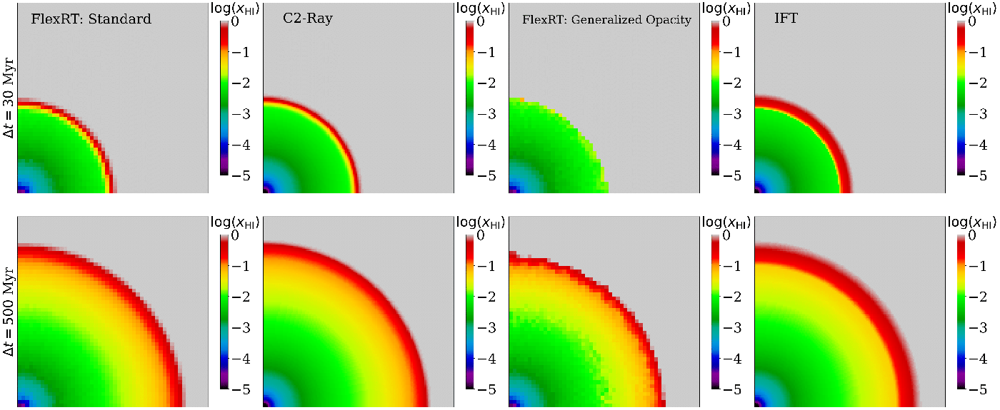
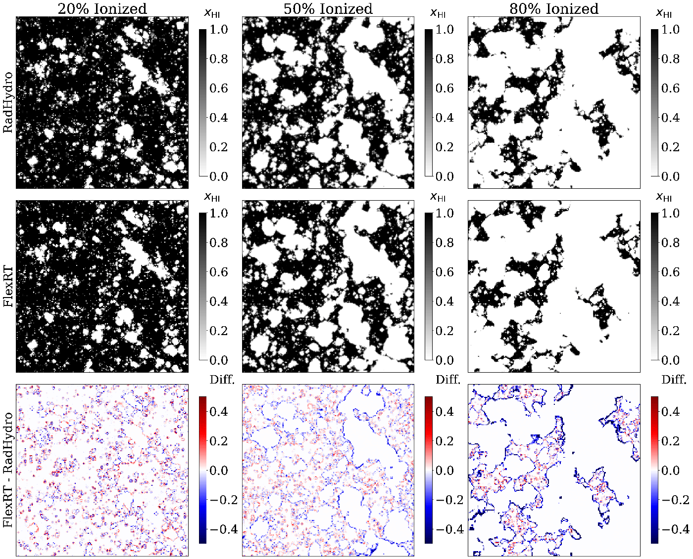
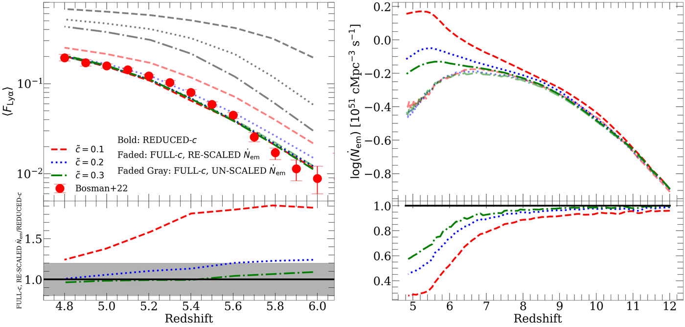
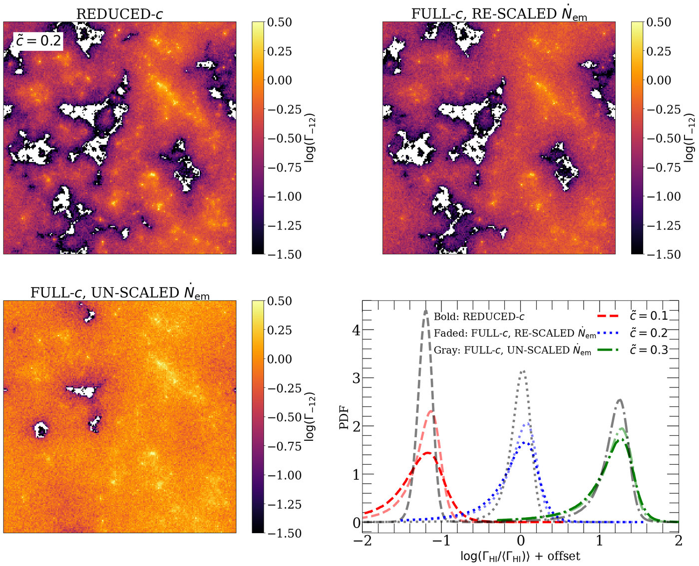

The FlexRT Code
FlexRT (Flexible Radiative Transfer) is a radiative transfer code that is optimized to model reionization accurately and efficiently. It combines adaptive ray tracing with a highly flexible, sub-grid treatment of the intergalactic opacity to enable accurate simulations of reionization on large scales to be performed quickly and accurately. The organizing principle of FlexRT is to allow the user to trade off easily between speed and accuracy in a way that allows for modest parameters space studies and for sources of model error to be well-understood. I have used FlexRT already in a number of studies, which you can read about here. Below, I detail some recent work I have done to document and test FlexRT and develop new tools to make it even faster.
Code Validation Study
Recently, I documented the basic machinery of FlexRT and subjected it to a rigorous battery of validation tests in Cain+24. These included the tests presented in part I of the Cosmological Radiative Transfer Codes Comparison Project (Iliev+06), and a test against the RadHydro code of Trac+07, which uses an adaptive ray tracing algorithm similar to that in FlexRT. The image below compares FlexRT to CRTCP codes in perhaps the simplest controlled RT test possible - the growth of an HII region around a single isotropic source in a uniform density, isothermal medium. FlexRT has two "modes" - one that solves a standard formulation of the RT equation, and another that uses a more general approach that admits the use of a flexible sub-grid model for the opacity.




The first two columns compare maps of the neutral fraction, but through the center of the expanding HII region, in FlexRT's "standard mode" to a similar test using the C2-Ray code. The other two columns compare FlexRT's "generalized opacity mode" to the IFT code. The good agreement between FlexRT and these established codes is repeated across full landscape of tests presented in Iliev+06.
The second image compares maps of the ionization field in a full-scale reionization simulation run with the RadHydro code (top row) and FlexRT (middle row). The bottom row shows difference maps. The level of visual agreement between the codes is striking, and conclusively shows that FlexRT's adaptive ray tracing scheme can efficiently and accurately simulate the growth of ionized regions, a crucial ingredient for forward-modeling nearly all reionization observables. Similar comparisons also demonstrate that FlexRT accurately captures the growth of and fluctuations in the ionizing background during and after reionization. Check out the linked studies for more details.
The Reduced Speed of Light
The reduced speed of light approximation (RSLA) uses a speed of light smaller than the physical value in RT simulations to increase the size of the RT timestep, thereby allowing the simulation to run more quickly. Unfortunately, this procedure has been shown to introduce significant inaccuracies in the reionization history and ionizing background near the end of reionization. In a recent single-author work (Cain+24), I showed that the RSLA is, to a good approximation, equivalent to a redshift-dependent re-scaling of the global ionizing emissivity. In modeling frameworks such as FlexRT, where the emissivity is a free parameter determined by the user, one can simply run an RSLA simulation and then re-scale the emissivity at the end, reducing computational cost significantly. The image below shows the accuracy of this re-scaling for modeling the mean transmission of the Lyman alpha forest. On the left, the bold curves show RSLA simulations with reduced speeds of light of 0.3, 0.2, and 0.1 times the true value.




The right panel shows the corresponding emissivities. The faded colored curves show full speed of light simulations after applying my re-scaling procedure, and the grey faded curves show the same, but without any re-scaling. The bottom panels show the ratios of the faded and bold colored curves. These are within 20% for reduced speeds of light as low as 0.2 times the true value, enabling a factor of 5 speedup without significant loss of accuracy.
The second image compares maps of the photo-ionization rates at z = 6 in each type of simulation for the case with 0.2 times the true speed of light. The lower right panel compares the distributions of photo-ionization rate for all three speed of light values. The comparison shows that RSLA simulations that use my re-scaling procedure still have inaccuracies in the spatial fluctuations of the ionizing background, and these become large enough to significantly affect key observables when the speed of light is 0.1 times it's true value, which limits the use of this method. Still, a factor of 5 speedup is a substantial improvement that will help enable parameter space studies of reionization using RT simulations.